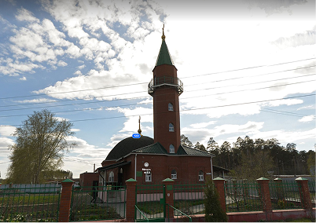
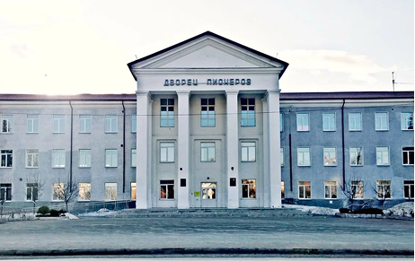
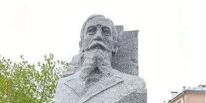
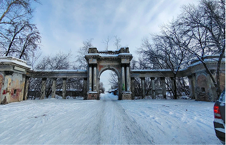
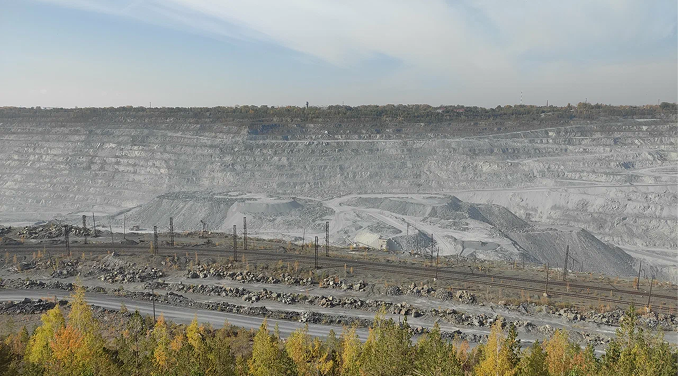
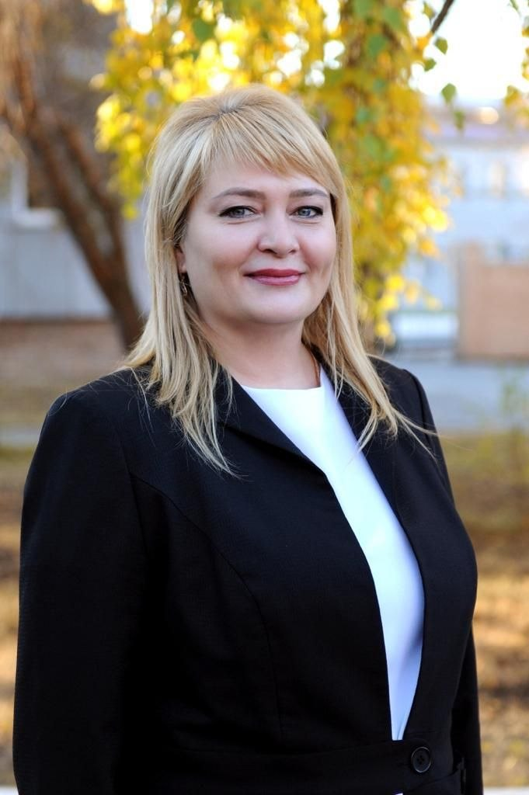

13 Локаций для посещения
Церковь Владимира Равновпостольного
Мемориал Победы - Военная техника

Мәчәт Иршад
Асбестовский исторический музей
Парк Асбест, Огненная Саламандра
Аллея Победы

Центр детского творчества им. Аввакумова

Памятник первооткрывателю Ладыженскому
Кинотеатр "Прогресс"
Центр культуры и досуга имени Горького
Церковь иконы Божией Матери Умиление

Ворота бывшего стадиона Строитель

Асбестовский карьер
Карта города
Глава города

Дополнительная информация
🧀 Еда
Идя по городу Вы можете встретить много мест общественного питания. Также Вы можете заглянуть в ТЦ "Небо" на Ленинградская улица, 26/2.
🌲 На природе тоже хорошо
В лесу недалеко от парка "Саламандра" есть тропа здоровья и мост Некрасова через реку Большой Рефт.
🚌 Транспорт
По городу и его окрестностям ездят автобусы. Автовокзал находится на улице Ладыженского, 27.